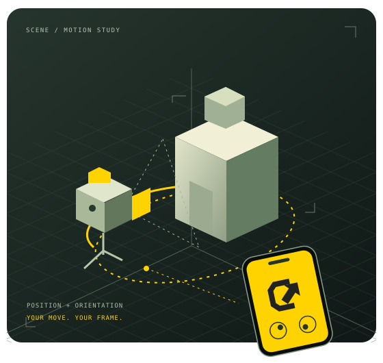

用你習慣的方式運鏡
雙搖桿提供移動與轉向；支援的裝置還能使用體感，或以 AR 追蹤相對位置與方向。沒有感測輸入時，可使用僅搖桿模式。
把 iPhone、iPad 變成 Blender 的虛擬攝影機控制器。移動、轉向、調整鏡頭，把腦中的運鏡，帶進你的場景。
需搭配 Blender 外掛。AR 追蹤依裝置與環境支援。

保留創作的直覺，也保留明確的控制。以適合當下鏡頭的方式，進入你的攝影機。
雙搖桿提供移動與轉向；支援的裝置還能使用體感，或以 AR 追蹤相對位置與方向。沒有感測輸入時，可使用僅搖桿模式。
在手機接收 Blender 場景預覽，調整焦段與拍攝設定。預覽與控制可以分開操作，暫停控制也能繼續觀察畫面。
由 Blender 端錄下動作與鏡頭設定，形成可保存在場景中的 Actions。之後回到 Blender，繼續編輯與整理拍攝內容。
控制資料傳到你選定的 Blender 主機；預覽則從主機傳回手機。先確認配對對象，再開始操控。
安裝相容外掛、開啟場景並選定控制攝影機。啟動服務後，取得新的配對 QR Code。
在同一可互通網路掃描 QR Code，或手動貼上完整配對網址。只連接你信任且有權使用的主機。
確認預覽與狀態後，明確恢復控制。選擇輸入模式、調整構圖，準備好再錄下你的 take。
產品與外掛仍在發布前準備中。目前沒有公開 App 下載、商店頁或正式外掛下載。
你的手機與你選定的 Blender 主機之間，交換控制與預覽資料。保存 take 的地方，是你管理的 Blender 場景。
閱讀完整隱私說明 ↗配對碼含驗證資料。一般流程使用 HTTPS；現版另保留本地 HTTP 相容流程，因此請只連接可信任的網路與主機。
相機用於掃碼與裝置上的 AR 追蹤。控制姿態與相對位置可傳至主機，並非把所有資料都留在手機。
take 可隨 .blend 檔保存。中斷手機連線或移除 App，並不會自動刪除主機上的錄製內容。